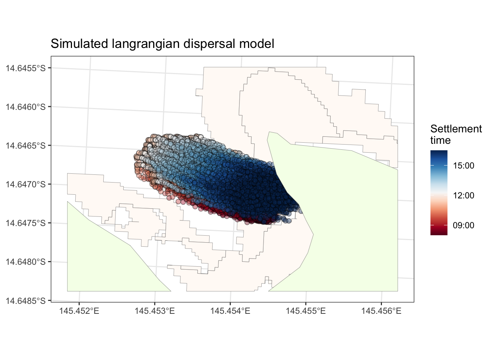
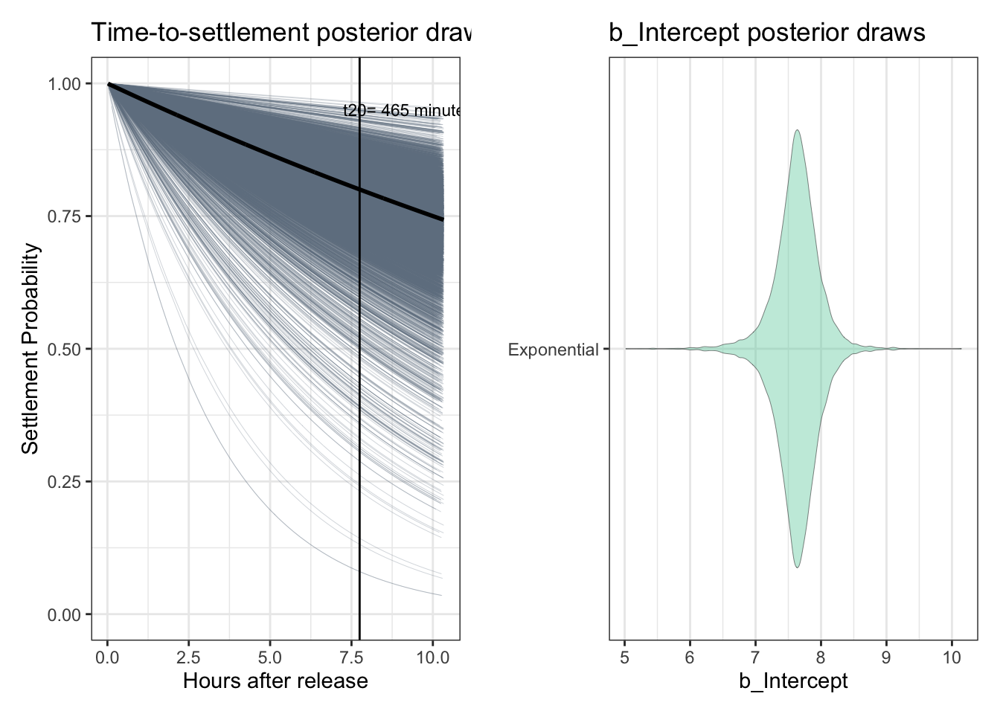
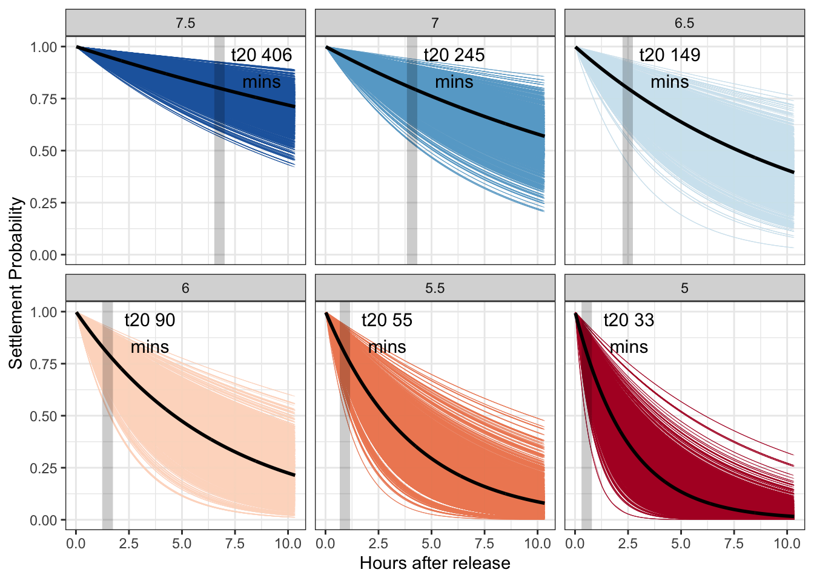

parameterisation:
library(tidyverse)
library(sf)
# Assuming data is loaded and has time, x_movement, y_movement for each timestep
data <- read.csv("/Users/rof011/1611115.csv") |>
rename(time=1, speed=2, heading=3, velocity_N=4, velocity_E=5) |>
mutate(time=ymd_hms(time))
filtered_data <- data %>%
dplyr::filter(time > ymd_hms("2021-11-29 06:00:00")) |>
dplyr::filter(time < ymd_hms("2021-11-29 18:00:00"))
filtered_data2 <- filtered_data |>
mutate(time_group = floor_date(time, "10 minutes")) %>%
group_by(time_group) %>%
summarise(speed=mean(speed), heading=mean(heading), velocity_N=mean(velocity_N), velocity_E=mean(velocity_E)) %>%
mutate(time_group = as.POSIXct(time_group)) %>%
mutate(distance=speed*60, distance_N=velocity_N*60, distance_E=velocity_E*60)
timewindow <- data.frame(xmin = min(filtered_data2[13:64,]$time_group),
xmax = max(filtered_data2[13:64,]$time_group),
ymin = min(filtered_data2[13:64,]$speed),
ymax = max(filtered_data2[13:64,]$speed))
logger_a <- ggplot() + theme_bw() +
geom_rect(data = timewindow, aes(xmin = xmin, xmax = xmax, ymin = ymin, ymax = ymax), color = "black", lwd=0.2, fill="lightgrey", alpha=0.1) +
geom_line(data=filtered_data2, aes(time_group, speed, color=heading), linewidth=0.7, show.legend = FALSE) +
scale_color_gradientn(colors = darken(rev(brewer.pal(11, "RdBu")), 0.1), limits = c(0, 360)) +
ggtitle("1611115_LI_16112021_ ten minute average 12hr window")
logger_b <- ggplot() + theme_bw() +
geom_line(data=filtered_data2[13:64,], aes(time_group, heading, color=heading)) +
scale_color_gradientn(colors = darken(rev(brewer.pal(11, "RdBu")), 0.1), limits = c(0, 360)) +
ggtitle("1611115_LI_16112021_ inset release window")
logger_plot <- logger_a | logger_b
#ggsave("outputs/logger_plot.png", logger_plot, width=4000, height=1400, units="px")
### # get a weibull draw
nsims <- 1000 # number of simulations
n_id <- 1000 # number of larvae
shape_params <- 1
scale_params <- 1000
shape_values <- rnorm(nsims, shape_params, shape_params*0.05)
scale_values <- rnorm(nsims, scale_params, scale_params*0.1)
###
predict_weibull <- foreach(i=1:nsims, .combine="rbind") %do% {
individual_times <- rweibull(runif(1000), shape = shape_values[i], scale = scale_values[i])
data.frame(settlement_point=sort(round(individual_times)),
id=(n_id)-seq(0,n_id-1),
sim=(i))
}
simulated_settlers_weibull <- predict_weibull |>
dplyr::filter(sim %in% sample(1:nsims, 1))
simulated_settlers_weibull_mean <- predict_weibull |> group_by(id) |> summarise(mean=mean(settlement_point)/60)
prop_1hr <- simulated_settlers_weibull_mean |> dplyr::filter(mean < 1) |> nrow()
prop_12hr <- simulated_settlers_weibull_mean |> dplyr::filter(mean < 12) |> nrow()
paste0("proportion settled in 1hr = ", prop_1hr)## [1] "proportion settled in 1hr = 58"paste0("proportion settled in 12hr = ", prop_12hr)## [1] "proportion settled in 12hr = 513"weib <- ggplot() +
theme_bw() +
ggtitle("Weibull") +
xlim(0, 12) +
geom_point(data = predict_weibull, aes(settlement_point / 60, id, group = sim, color=sim), show.legend=FALSE, size = 0.1, alpha = 0.2) +
geom_point(data = simulated_settlers_weibull, aes(settlement_point / 60, id), colour = "black", size = 0.2, alpha = 0.6) +
xlab("Timing of competency (hrs)") +
ylab("Individual") +
scale_color_viridis_c(option="mako")
#ggsave("outputs/weib.png", weib, width=2000, height=1300, units="px")dispersal model:
# Starting positions and standard deviation for uncertainty
x0 <- 1631154
y0 <- 8354197
uncertainty_sd <- 0.5
n_particles <- 1000
# Initialize particles
particles <- tibble(
particle_id = 1:n_particles,
x = rep(x0, n_particles),
y = rep(y0, n_particles)
)
# List to store particle states at each timestep
particle_states <- list()
data <- filtered_data2[13:64,]
range(data$time_group)## [1] "2021-11-29 08:00:00 UTC" "2021-11-29 16:30:00 UTC"# Simulate movement
particle_states <- NULL
for (i in 1:nrow(data)) {
particles <- particles %>%
mutate(
x = x + (data$velocity_E[i]/100)*600 + rnorm(n_particles, mean = 0, sd = abs((data$velocity_E[i]/100)*600)*uncertainty_sd),
y = y + (data$velocity_N[i]/100)*600 + rnorm(n_particles, mean = 0, sd = abs((data$velocity_N[i]/100)*600)*uncertainty_sd)
)
current_state <- particles %>%
mutate(time = data$time_group[i])
particle_states[[i]] <- current_state
}
# Combine all timesteps into one dataframe
all_timesteps <- bind_rows(particle_states, .id = "timestep")
# Print a sample of the resulting data
print(head(all_timesteps))## # A tibble: 6 × 5
## timestep particle_id x y time
## <chr> <int> <dbl> <dbl> <dttm>
## 1 1 1 1631136. 8354204. 2021-11-29 08:00:00
## 2 1 2 1631137. 8354203. 2021-11-29 08:00:00
## 3 1 3 1631138. 8354201. 2021-11-29 08:00:00
## 4 1 4 1631148. 8354197. 2021-11-29 08:00:00
## 5 1 5 1631143. 8354203. 2021-11-29 08:00:00
## 6 1 6 1631129. 8354200. 2021-11-29 08:00:00# Convert to sf object
all_timesteps_sf <- all_timesteps %>%
st_as_sf(coords = c("x", "y"), crs = 20353)
# Print a sample of the resulting sf object
print(head(all_timesteps_sf))## Simple feature collection with 6 features and 3 fields
## Geometry type: POINT
## Dimension: XY
## Bounding box: xmin: 1631129 ymin: 8354197 xmax: 1631148 ymax: 8354204
## Projected CRS: AGD84 / AMG zone 53
## # A tibble: 6 × 4
## timestep particle_id time geometry
## <chr> <int> <dttm> <POINT [m]>
## 1 1 1 2021-11-29 08:00:00 (1631136 8354204)
## 2 1 2 2021-11-29 08:00:00 (1631137 8354203)
## 3 1 3 2021-11-29 08:00:00 (1631138 8354201)
## 4 1 4 2021-11-29 08:00:00 (1631148 8354197)
## 5 1 5 2021-11-29 08:00:00 (1631143 8354203)
## 6 1 6 2021-11-29 08:00:00 (1631129 8354200)langrangian <- ggplot() + theme_bw() +
ggtitle("Simulated langrangian dispersal model") +
geom_sf(data=st_crop(seascape, st_buffer(all_timesteps_sf, 100)), alpha=1, fill=lighten("burlywood3",0.95), linewidth=0.1) +
geom_sf(data=all_timesteps_sf, aes(fill=as.POSIXct(time)), size=2, shape=21, alpha=0.4) +
geom_sf(data=st_crop(lizard_osm_map, st_buffer(all_timesteps_sf, 100)), alpha=1, fill=lighten("darkolivegreen3", 0.95), linewidth=0.1) +
# labs(fill="Settlers \nper hectare") +
scale_fill_gradientn(colors = brewer.pal(11, "RdBu"), name="Settlement \ntime", trans = "time")
#ggsave("/Users/rof011/coralseed/outputs/langrangian.png", langrangian, width=3000, height=2000, units="px")
langrangian
From the coralseed model:
# The brms::inv_logit_scaled function is intended for transforming linear predictors to probabilities (on the (0,1) scale), which is useful in logistic regression models but not directly applicable to the exponential survival models in the way it's being used here.
# The key issue is the attempt to multiply 1 - inv_logit_scaled(-parameter_draws_sample$b_Intercept) * minutes to derive settlement_probability. This formula does not correspond to any standard survival model formulation. In an exponential survival model, the survival probability over time
# S(t)=exp(−λt), where
# λ is the rate parameter. The b_Intercept from a survival model would typically influence the rate parameter
# λ rather than being used directly as a multiplier against minutes in a probability calculation.
#Given this, if your goal is to incorporate a transformation of the b_Intercept to model survival probability, you should directly compute lambda as part of the survival probability calculation without mixing it with logistic regression concepts unless there's a specific modeling reason for doing so.
dataset <- map(1:10000, function(i) {
parameter_draws_sample <- coralseed::parameter_draws_exp %>% slice_sample(n = 1)
lambda <- exp(-parameter_draws_sample$b_Intercept) # Simple exponential transformation to ensure lambda > 0
newdat <- data.frame(minutes = seq(1, 620, 1)) %>%
mutate(settlement_probability = exp(-lambda * minutes)) %>% # Correct survival model formulation
mutate(id = i)
return(newdat)
})
dataset_grouped <- do.call(rbind, dataset) %>%
mutate(outcome = rbinom(nrow(.), 1, settlement_probability))
dataset_grouped_subset <- dataset_grouped %>% group_by(id) %>% slice_sample(n=100)
dataset_grouped_median <- dataset_grouped %>% group_by(minutes) %>% summarise(settlement_probability=median(settlement_probability))
target_probability <- 0.8
t50 <- dataset_grouped_median %>%
mutate(difference = abs(settlement_probability - target_probability)) %>%
arrange(difference) %>%
slice(1) |> pull(minutes)
# Plot
exp_draws <- ggplot() + theme_bw() + ggtitle("Time-to-settlement posterior draws") +
xlab("Hours after release") + ylab("Settlement Probability") + ylim(0,1) +
geom_line(data=dataset_grouped_subset,
aes(x=minutes/60, y=settlement_probability, group=id), linewidth=0.05, color="slategrey") +
geom_line(data=dataset_grouped_median, aes(x=minutes/60, y=settlement_probability), linewidth=1, color="black") +
geom_vline(xintercept =t50/60) +
geom_text(aes(x=t50/60 + 1.5, y=0.95, label=paste0("t20= ", t50, " minutes")), size=3)
exp_df <- coralseed::parameter_draws_exp |> mutate(x="Exponential")
b_inter <- ggplot() + theme_bw() + ggtitle("b_Intercept posterior draws ") +
geom_violin(data=exp_df, aes(b_Intercept, x), fill="aquamarine3", alpha=0.4, linewidth=0.1) + ylab("")
exp_draws <- exp_draws | b_inter
exp_draws
#ggsave("outputs/exp_draws.png", exp_draws, width=3200, height=1000, units="px")generate_bintercepts <- function(b_intercept_level) {
b_intercept_variance <- sd(coralseed::parameter_draws_exp$b_Intercept)
sim_exp <- data.frame(b_Intercept = rnorm(1000, b_intercept_level, b_intercept_variance))
dataset <- map(1:10000, function(i) {
parameter_draws_exp <- sim_exp %>% slice_sample(n = 1)
lambda <- exp(-parameter_draws_exp$b_Intercept) # Simple exponential transformation to ensure lambda > 0
newdat <- data.frame(minutes = seq(1, 620, 1)) %>%
mutate(settlement_probability = exp(-lambda * minutes)) %>% # Correct survival model formulation
mutate(id = i) |>
mutate(level = as.character(b_intercept_level))
return(newdat)
})
dataset_grouped <- do.call(rbind, dataset) %>%
mutate(outcome = rbinom(nrow(.), 1, settlement_probability))
dataset_grouped_subset <- dataset_grouped %>% group_by(id, level) %>% slice_sample(n=100)
dataset_grouped_median <- dataset_grouped %>% group_by(minutes, level) %>%
summarise(settlement_probability=median(settlement_probability))
target_probability <- 0.8
t80 <- dataset_grouped_median %>%
dplyr::ungroup() %>%
dplyr::mutate(difference = abs(settlement_probability - target_probability)) %>%
dplyr::arrange(difference) %>%
dplyr::slice_head(n=1)
time_to_settlement = data.frame(time = t80$minutes, level=as.character(b_intercept_level))
output <- list(dataset_grouped, dataset_grouped_subset, dataset_grouped_median, time_to_settlement)
names(output) <- c("all", "subset", "median", "time_to_20_percent")
return(output)
}
b_5 <- generate_bintercepts(b_intercept_level=5)
b_5.5 <- generate_bintercepts(b_intercept_level=5.5)
b_6 <- generate_bintercepts(b_intercept_level=6)
b_6.5 <- generate_bintercepts(b_intercept_level=6.5)
b_7 <- generate_bintercepts(b_intercept_level=7)
b_7.5 <- generate_bintercepts(b_intercept_level=7.5)
output_b_median <- rbind(b_5$median, b_5.5$median, b_6$median, b_6.5$median, b_7$median, b_7.5$median) |>
mutate(level=as.factor(level)) |>
mutate(level=fct_relevel(level, (c("7.5", "7", "6.5", "6", "5.5", "5"))))
output_b_subset <- rbind(b_5$subset, b_5.5$subset, b_6$subset, b_6.5$subset, b_7$subset, b_7.5$subset) |>
mutate(level=as.factor(level)) |>
mutate(level=fct_relevel(level, (c("7.5", "7", "6.5", "6", "5.5", "5"))))
output_threshold <- rbind(b_5$time_to_20_percent, b_5.5$time_to_20_percent, b_6$time_to_20_percent, b_6.5$time_to_20_percent, b_7$time_to_20_percent, b_7.5$time_to_20_percent) |>
mutate(level=as.factor(level)) |>
mutate(level=fct_relevel(level, (c("7.5", "7", "6.5", "6", "5.5", "5"))))
output_time_to <- rbind(b_5$time_to_20_percent, b_5.5$time_to_20_percent, b_6$time_to_20_percent, b_6.5$time_to_20_percent, b_7$time_to_20_percent, b_7.5$time_to_20_percent) |>
mutate(level=as.factor(level)) |>
mutate(level=fct_relevel(level, (c("7.5", "7", "6.5", "6", "5.5", "5"))))
# Plot
b_intercepts <- ggplot() + theme_bw() + facet_wrap( ~ level, ncol=3) +
xlab("Hours after release") + ylab("Settlement Probability") + ylim(0,1) +
geom_line(data=output_b_subset,
aes(x=minutes/60, y=settlement_probability, group=id, color=level), show.legend=FALSE, linewidth=0.05) +
geom_line(data=output_b_median, aes(x=minutes/60, y=settlement_probability), show.legend=FALSE, linewidth=1, color="black") +
geom_vline(data=output_time_to, aes(xintercept =time/60, color=level), alpha=0.2, linewidth=3, color="black") +
geom_text(data=output_time_to, aes(x = time/60 + 2, y = 0.9, label = paste0("t20 ", time, "\nmins"), color=level), color="black", size=4) +
scale_color_brewer(palette="RdBu", direction=-1 )
#ggsave("outputs/b_intercepts.png", b_intercepts, width=4800, height=2400, units="px")
b_intercepts
output_time_to$rate <- 465/output_time_to$time
output_b_median |> group_by(level) |> dplyr::filter(minutes < 620) |> slice_tail(n=1) |> mutate(setprob=1-settlement_probability)## # A tibble: 6 × 4
## # Groups: level [6]
## minutes level settlement_probability setprob
## <dbl> <fct> <dbl> <dbl>
## 1 619 7.5 0.711 0.289
## 2 619 7 0.569 0.431
## 3 619 6.5 0.395 0.605
## 4 619 6 0.214 0.786
## 5 619 5.5 0.0801 0.920
## 6 619 5 0.0160 0.984